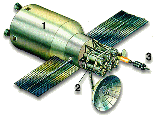
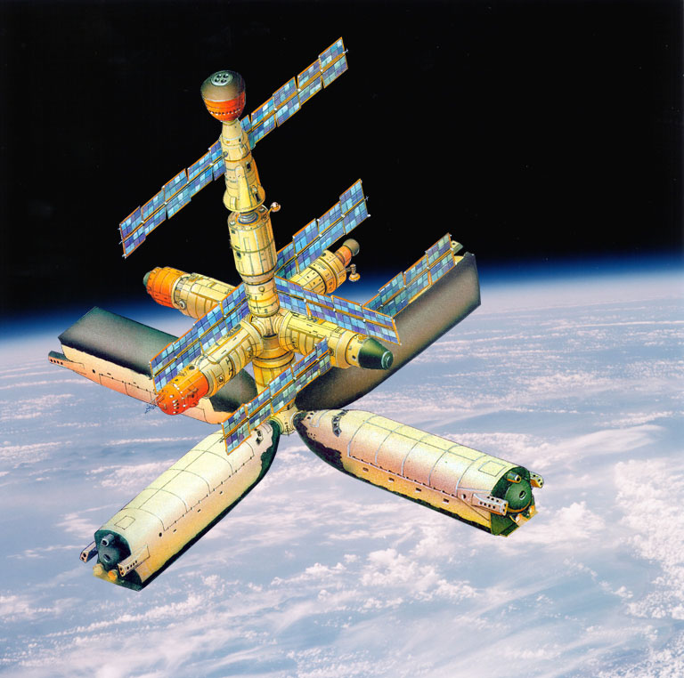
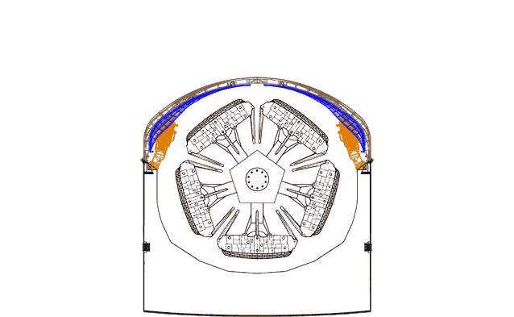
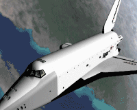

Звездный меч Империи
или история советского военного
космоса. 80-е годы
В Советском Союзе с конца 50-х гг. велись работы по созданию средств борьбы с американскими военными спутниками-разведчиками. 1 ноября 1963 г. на околоземную орбиту вышел первый советский маневрирующий спутник "Полет-1". 12 апреля 1964 г. стартовал "Полет-2". Эти КА были разработаны в конструкторском бюро Владимира Николаевича Челомея и служили прототипами автоматического спутника-перехватчика ИС истребитель спутников). Собственно перехват в космосе спутником ИС был впервые успешно выполнен день в день пять лет спустя после пуска первого ИСа - 1 ноября 1968 г.
В 1960-80-е гг. в СССР было выполнено несколько десятков испытаний истребителей спутников. Последнее такое испытание состоялось 18 июня 1982 г. Оно проводилось в рамках крупнейших учений советских ядерных сил, прозванных на Западе "Семичасовой ядерной войной". Учения, в ходе которых были запущены наземные и морские баллистические ракеты, противоракеты, военные спутники (в том числе и перехватчик), произвели на руководство Соединенных Штатов неизгладимое впечатление. "Семичасовая ядерная война" дала неопровержимые аргументы американским военным и политикам, требовавшим начать работы по созданию в США противоспутниковой и противоракетной систем нового поколения.
Решение о разработке и развертывании противоспутниковой системы Президент Рональд Рейган объявил уже через месяц после "Семичасовой ядерной войной" - в июле 1982 г. Затем, 23 марта 1983 г. Рейган провозгласил Стратегическую оборонную инициативу (СОИ). Эту программу вскоре окрестили "Звездными войнами" в честь популярного кинофильма.
В США работы по созданию боевых космических станций развернулись еще в начале 70-х гг, до объявления Рейганом программы СОИ. Предлагались самые экзотические проекты с использованием кинетического, лазерного и пучкового оружия. Так, например, рассматривалась возможность вывода на орбиту мощного рентгеновского лазера. Энергию для него обеспечивал бы ядерный взрыв. Однако на деле не все так оказалось просто, как на бумаге. Серия испытаний лазерного и пучкового оружия выявили массу проблем, которые американским ученым так и не удалось решить вплоть до официального свертывания работ по СОИ в 1993 г.
А что же Советский Союз? В середине 70-х гг. работы по ударному космическому оружию были начаты в НПО "Энергия", руководимом Валентином Петровичем Глушко. Головная роль "Энергии" была оформлена специальным Постановлением ЦК КПСС и Совета Министров СССР "Об исследовании возможности создания оружия для ведения боевых действий в космосе и из космоса".
В официальной истории РКК "Энергия" им. С.П.Королева, изданной в 1996 г, об этих работах говорилось следующее:
"..В 70-80-е гг. был проведен комплекс исследований по определению возможных путей создания космических средств, способных решать задачи поражения КА военного назначения, баллистических ракет в полете, а также особо важных воздушных, морских и наземных целей. При этом ставилась задача достижения необходимых характеристик указанных средств на основе использования имевшегося к тому времени научно-технического задела с перспективой развития этих средств при ограничении по производственным мощностям и финансированию.
Для поражения военных космических объектов были разработаны два боевых КА на единой конструктивной основе, оснащенные различными типами бортовых комплексов вооружения - лазерными и ракетными..
Меньшая масса бортового комплекса вооружения с ракетным оружием, по сравнению с комплексом с лазерным оружием, позволяла иметь на борту КА больший запас топлива, поэтому представлялось целесообразным создание системы с орбитальной группировкой, состоявшей из боевых КА, одна часть из которых оснащена лазерным, а другая - ракетным оружием. При этом первый тип аппаратов должен был применяться по низкоорбитальным объектам, а второй - по объектам, расположенным на средневысотных и геостационарных орбитах.."
Оба типа боевых КА разработки НПО "Энергия" было решено создать на одной конструктивной базе. Исходя из оценок массовых характеристик будущих боевых комплексов в качестве базовой платформы была выбрана орбитальная станция типа 17К ДОС. НПО "Энергия" имела уже большой опыт эксплуатации аппаратов такого класса. На основе этой базовой платформы, как уже говорилось выше, были разработаны два боевых комплекса:
- 17Ф19 "Скиф" - система, предусматривающая использование лазеров
- 17Ф111 "Каскад" - система с ракетным оружием.
НПО "Энергия" была головной
организацией по всей программе противоспутникового и противоракетного оружия
космического базирования. Головной фирмой по лазерному комплексу для "Скифа"
стало НПО "Астрофизика" - ведущая советская фирма по лазерам. Ракетный
комплекс для "Каскада" разрабатывался в фирме А.Э.Нудельмана, известного
советского конструктора оружия для самолетов и КА. Выводить на орбиту
"Скифы" и "Каскады" должны были на первом (экспериментальном) этапе РН 8К82К
"Протон-К", а позже - орбитальные корабли 11Ф35ОК "Буран". Для большего
срока боевого дежурства каждый из типов этих КА имел возможность дозаправки,
которую должны были обеспечивать корабли "Буран". Кроме того,
предусматривалась возможность посещения боевых станций экипажем из двух
человек сроком до 7 суток на кораблях типа "Союз".
|  |  |
| Ракетная станция "Каскад" |
Ракета-перехватчик |
.Меньшая масса бортового комплекса вооружения "Каскад" с ракетным оружием, по сравнению с комплексом "Скиф" с лазерным оружием, позволяла иметь на борту КА больший запас топлива, поэтому представлялось целесообразным создание системы с орбитальной группировкой, состоящей из боевых космических аппаратов, одна часть из которых оснащена лазерным, а другая - ракетным оружием. При этом первый тип КА должен был применяться по низкоорбитальным объектам, а второй - по объектам, расположенным на средневысотных и геостационарных орбитах.
Для поражения стартующих баллистических ракет и их головных блоков на пассивном участке полета в НПО "Энергия" для комплекса "Каскад" был разработан проект ракеты-перехватчика космического базирования. В практике НПО "Энергия" это была самая маленькая, но самая энерговооруженная ракета. Достаточно сказать, что при стартовой массе, измеряемой всего десятками килограммов, ракета-перехватчик обладала запасом характеристической скорости, соизмеримой с характеристической скоростью ракет, выводящих современные полезные нагрузки на орбиту ИСЗ. Высокие характеристики достигались за счет применения технических решений, основанных на последних достижениях отечественной науки и техники в области миниатюризации приборостроения. Авторской разработкой НПО "Энергия" явилась уникальная двигательная установка, использующая нетрадиционные некриогенные топлива и сверхпрочные композиционные материалы.
Для орбитальных испытаний ракет было решено установить их на грузовые транспортные корабли "Прогресс". На первом этапе в 1986-88 гг. были запланированы пять полетов таких кораблей в рамках программы "Каскад". На производственной базе НПО "Энергия" - Заводе экспериментального машиностроения (ЗЭМ) началось изготовление этих кораблей под бортовыми номерами 129, 130, 131, 132 и 133. Однако до летных испытаний дело так и не дошло.
Для поражения особо важных наземных целей разрабатывалась космическая станция, основу которой составляла станция серии 17К ДОС и на которой должны были базироваться автономные модули с боевыми блоками баллистического или планирующего типа. По специальной команде модули отделялись от станции, посредством маневрирования они должны были занимать необходимое положение в космическом пространстве с последующим отделением блоков по команде на боевое применение. Конструкция и основные системы автономных модулей были заимствованы с орбитального корабля "Буран". В качестве варианта боевого блока рассматривался аппарат на базе экспериментальной модели ОК "Буран" (аппараты семейства "БОР").

Боевая космическая станция. 1 - базовый блок; 2 - центр управления боевыми блоками; 3 - многоразовый транспортный корабль "Заря"; 4 - модули боевой станции с прицельными комплексами; 5 - боевые модули (на базе фюзеляжа ОК "Буран")

Боевой модуль уходит на цель.
Тот же базовый модуль, как на орбитальной станции "Мир", те те боковые (уже не секрет, что на "Спектре", например, предполагались испытания оптической системы обнаружения ракетных пусков. А стабилизированная платформа с теле- и фотокамерами на "Кристалле" - чем не прицел?), но вместо астрофизического "Кванта" - модуль с комплексом боевого управления. Под "шариком" переходного отсека - еще один переходник, на котором висят четыре модуля (на основе "бурановского" фюзеляжа) с боевыми блоками. Это, так сказать, "исходное положение". По тревоге они отделяются и расходятся на рабочие орбиты, выбираемые из следующего соображения: чтобы каждый блок вышел на свою цель в тот момент, когда над ней будет пролетать центр управления.
Фюзеляж "Бурана" используется в этом проекте по принципу "не пропадать же добру": большие запасы топлива в объединенной двигательной установке и очень хорошая система управления позволяют активно маневрировать на орбите, при этом полезный груз - боевые блоки, находятся в контейнере, скрытые от любопытных глаз, а так же неблагоприятных факторов космического полета.
Что существенно в контексте стратегического сдерживания - эта система оружия нанесет прицельный, "хирургический" удар даже в том случае, если будет уничтожено все остальное. Как атомные подводные лодки, она способна переждать первый залп.
Военная целевая нагрузка для ОК "Буран" разрабатывалась на основании специального секретного постановления ЦК КПСС и Совета Министров СССР "Об исследовании возможности создания оружия для ведения боевых действий в космосе и из космоса" (1976 г.)
Боевые блоки, представлявшие собой по сути планирующие ядерные бомбы, должны были компактно размещаться в отсеке полезного груза боевого ударного модуля со сложенными консолями крыла в трех-четырех последовательно установленных револьверных катапультных пусковых установках.

Габариты отсека полезного груза "Бурана" позволяют разместить на каждой вращающейся катапультной установке до пяти боевых блоков, как это изображено на рисунке. С учетом возможного бокового маневра каждого боевого блока при спуске в атмосфере не менее плюс/минус 1100 - 1500 км один ударный модуль мог бы в короткое время своими двадцатью маневрирующими боевыми блоками стереть все живое с лица Земли в полосе шириной до 3000 км.

Существуют сведения и о других военных аспектах применения орбитальных кораблей. В частности, в рамках "ассиметричного ответа" американской программе "звездных войн" (СОИ - Стратегической оборонной инициативы) рассматривались вопросы минирования с помощью "Бурана" околоземного космического пространства с созданием непреодолимой завесы для космического сегмента СОИ. Более того, в СССР проводились научно-исследовательские работы с наземной экспериментальной отработкой по созданию орбитальных бризантных облаков, быстро и полностью "вычищающих" от космических аппаратов весь околоземный космос до высот 3000 км. Конечно, после этого околоземный космос становился полностью недоступен в течение нескольких месяцев, но ведь эти меры предполагалось использовать только во время (или непосредственно перед) полномасштабного военного конфликта между СССР и США. А как известно, "лес рубят - щепки летят"..
Однако куда дальше продвинулись работы над лазерным оружием. Поэтому о создании космического лазерного оружия стоит рассказать более подробно.
История проекта "СКИФ".
Борьба с баллистическими ракетами оказалась слишком сложной проблемой. Потому заказчик - Министерство обороны СССР, решило начать сперва разработку эффективного противоспутникового оружия. Ведь вывести из строя КА значительно проще, чем обнаружить и уничтожить летящую боеголовку. Тем самым в Советском Союзе стала разрабатываться так называемая программа "анти-СОИ". Эта система должна была уничтожать будущие американские боевые КА, тем самым лишая США защиты от ядерных ракет. Эти советские станции-"убийцы" хорошо укладывались в рамки военной доктрины СССР, предусматривавшей так называемый "упреждающий ответный удар", согласно которому сначала советские космические станции "анти-СОИ" должны были вывести из строя американские станции СОИ, а затем уже стартовали бы советские баллистические ракеты для нанесения удара по территории противника.
Решение было с первого взгляда достаточно простым: установить на КА уже созданный и проверенный лазер для испытаний его в космосе. Выбор пал на лазерную установку мощностью 1 МВт, созданную одним из филиалов Института атомной энергии им. И.В.Курчатова. Этот газодинамический лазер, работающий на углекислом газе, был разработан для установки на самолетах Ил-76. К 1983 г. он уже прошел летные испытания.
История авиационного лазерного проекта, тесно переплелась с проектом космического лазера. Поэтому, несмотря на то, что она лежит за пределами темы статьи, о ней стоит коротко рассказать. К тому же описание лазера на Ил-76 дает представление о лазере для испытаний в космосе.
Боевой лазер испытывался на самолете Ил-76МД с бортовым номером СССР-86879 (иначе его называли Ил-76ЛЛ с БЛ - летающая лаборатория Ил-76 с боевым лазером). Выглядел этот самолет своеобразно. Для питания лазера и сопутствующей аппаратуры по бокам носовой части были установлены два турбогенератора АИ-24ВТ мощностью 2.1 МВт. Вместо штатного метеорадара на носу был установлен огромный бульбообразный обтекатель на специальном переходнике, к которому снизу был пристроен продолговатый обтекатель поменьше. Очевидно, там размещалась антенна системы прицеливания, которая крутилась во все стороны, ловя цель.
Оригинально было решено размещение лазерной пушки: чтобы не портить аэродинамику самолета еще одним обтекателем, пушку сделали убирающейся. Верх фюзеляжа между крылом и килем был вырезан и заменен огромными створками, состоящими из нескольких сегментов. Они убирались внутрь фюзеляжа, а затем наверх вылезала башенка с пушкой. За крылом имелись выступающие за контур фюзеляжа обтекатели с профилем, подобным профилю крыла. Грузовая рампа сохранялась, но створки грузового люка были сняты, а люк зашит металлом.
Доработку самолета выполнял Тагонрогский авиационный научно-исследовательский комплекс (ТАНТК) им. Г.М.Бериева и Таганрогский машиностроительный завод им. Георгия Димитрова.
Космический аппарат, предназначенный для установки на нем мегаваттного лазера с Ил-76ЛЛ с БЛ, получил обозначение 17Ф19Д "Скиф-Д". Буква "Д" обозначала "демонстрационный". 27 августа 1984 г. министр общего машиностроения Олег Дмитриевич Бакланов подписал приказ N343/0180 о создании 17Ф19Д "Скиф-Д". КБ "Салют" было определено головным по его созданию. Этим же приказом была официально утверждена программа по созданию последующих военных КА тяжелого типа. Затем приказом по МОМ N168 от 12 мая 1985 г. была установлена кооперация предприятий, изготавливающих "Скиф-Д". Наконец, в связи с тем, что противоракетная тематика была одним из приоритетнейших направлений, по "Скифу-Д" вышло 27 января 1986 г Постановление ЦК КПСС и Совмина СССР N135-45. Такой чести удостаивался не каждый советский КА. По этому Постановлению первый запуск на орбиту "Скифа-Д" должен был состояться во втором квартале 1987 г.
"Скиф-Д" был прежде всего экспериментальным КА, на котором должны были отрабатываться не только лазер, но и некоторые штатные системы следующих аппаратов, создаваемых в рамках программы "советской СОИ". Это были системы разделения и ориентации, система управления движением, система электропитания, система управления бортовым комплексом.
Аппарат 17Ф19Д должен был продемонстрировать также принципиальную возможность создания КА для уничтожения целей в космосе. Для испытаний лазера на "Скифе-Д" планировалось установить специальные мишени, имитирующие вражеские ракеты, боеголовки и спутники. Однако разместить такой мощный лазер на аппарате класса станции ДОС было невозможно. Выход нашелся быстро. К 1983 г. стал виден "свет в конце туннеля" с РН 11К25 "Энергия". Этот носитель мог разгонять до скорости, близкой к первой космической, полезную нагрузку массой около 95 тонн. Именно в такую массу вписывался и аппарат с мегаваттным авиационным лазером.
Чтобы ускорить ход работ над "Скифом-Д" в КБ "Салют" было решено максимально использовать опыт прежних и ведущихся на тот момент работ. В состав "Скифа-Д" вошли элементы транспортного корабля ТКС и орбитального корабля "Буран", базового блока и модулей ОК "Мир", РН "Протон-К". Аппарат имел длину порядка 40 м, максимальный диаметр 4.1 м и массу около 95 тонн.
Конструктивно первый "Скиф-Д" (бортовой номер 18101) состоял из двух жестко соединенных между собой модулей: функционально-служебного блока (ФСБ) и целевого модуля (ЦМ). ФСБ, разработанный на базе функционально-грузового блока 11Ф77 корабля 11Ф72 ТКС, использовался для доразгона "Скифа-Д" после его отделения от РН: блок добавлял необходимые 60 м/с для выхода КА на опорную низкую орбиту. В ФСБ также располагались основные служебные системы аппарата. Для их энергопитания на ФСБ устанавливались солнечные батареи от ТКС.
Целевой модуль не имел прототипов. Он состоял из трех отсеков: отсека рабочих тел (ОРТ), энергетического отсека (ОЭ) и отсека специальной аппаратуры (ОСА). В ОРТ должны были размещаться баллоны с CO2 для питания лазера. Энергетический отсек предназначался для установки в нем двух больших электро-турбогенераторов (ЭТГ), мощностью 1.2 МВт каждый. В ОСА размещались сам боевой лазер и система наведения и удержания (СНУ). Для облегчения наведения на цели лазера было решено сделать головную часть ОСА поворотной относительно всего остального аппарата. В двух боковых блоках ОСА должны были располагаться мишени для отработки как СНУ, так и боевого лазера.
Однако создатели "Скифа-Д" столкнулись с целым рядом технических проблем. Во-первых, было совершенно неясно запуститься ли на орбите в условиях вакуума и невесомости газодинамический лазер на углекислом газе. Чтобы разобраться с этой проблемой на Заводе им. М.В.Хруничева было решено создать специальный испытательный стенд. Стенд занимал огромную территорию и включал в себя четыре 20-метровые вертикальные цилиндрические башни вакуумирования, две 10-метровые шаровые емкости для хранения криогенных компонентов, разветвленную сеть трубопроводов большого диаметра. До сих пор эти строения на территории ГКНПЦ им. М.В. Хруничева напоминают о былой программе "советской СОИ".
Много проблем вызывала газодинамика мегаваттного лазера. При его работе был очень большой расход рабочего газа (CO2). Исходящая из лазера струя газа вызывала возмущающий момент. Чтобы его предотвратить решили разработать систему безмоментного выхлопа (СБВ). Специальный трубопровод, прозванный за свой внешний вид "штанами", шел от лазера в энергетический отсек. Там был установлен специальный выхлопной патрубок с газовыми рулями для компенсации возмущающего момента. СБВ разработало и изготовило НПО им. С.А. Лавочкина.
Серьезные трудности возникли при создании системы энергоснабжения лазера, в особенности - ЭТГ. При их испытаниях были случаи взрывов. Работа турбин генератора тоже вызывала большие возмущающие моменты на аппарат.
Очень сложной вышла система управления движением "Скифа-Д". Ведь ей приходилось производить нацеливание поворотной головной части и всего аппарата на цель, при этом компенсируя возмущения от работы генераторов, от выхлопа газов из лазера, да и от самих разворотов очень тяжелой, но при этом очень быстро вращающейся головной части ОСА. Уже в 1985 г. было ясно, что потребуется один испытательный пуск КА только для отработки всех этих вспомогательных систем. Поэтому было решено изделие "Скиф-Д1" вывести на орбиту без боевого лазера, и лишь "Скиф-Д2" полностью оснастить "спецкомплексом".
Проект "Скифа-Д" вяз во всех этих проблемах и сложностях. Конструкторы КБ "Салют" натыкались все на новые и новые трудноразрешимые задачи. Конечно, со временем их можно было бы преодолеть, но не в те сроки, которые устанавливали приказы МОМ и Постановления ЦК и СМ. В конце 1985 г, рассматривая планы на 1986-87 гг, старт "Скифа-Д1" N18101 планировался на июнь 1987 г, а "Скифа-Д2" N18301 с лазером - на 1988 г.
Следующим за "Скифом-Д" в КБ "Салют" планировалось создать аппарат 17Ф19С "Скиф-Стилет". Это тоже был аппарат тяжелого класса, рассчитанный на запуск на РН "Энергия". 15 декабря 1986 года был подписан приказ МОМ N515 о направлении работ в 1987-90 годах, где фигурировал и "Скиф-Стилет". На этом аппарате собирались установить бортовой специальный комплекс (БСК) 1К11 "Стилет", разработанный в НПО "Астрофизика".
"Стилет" для 17Ф19С представлял собой космический вариант земного "Стилета", уже созданного и проходящего в 80-х годах испытания. Это была "десятиствольная" установка инфракрасных лазеров, работающих на длине волны 1.06 нм. Однако, наземный "Стилет" не предназначался для разрушения или уничтожения техники противника. Этого просто не позволяла атмосфера и энергетика. Лазеры предназначались для вывода из строя прицелов и датчиков оптических устройств. На Земле применение "Стилета" было малоэффективным. В космосе за счет вакуума радиус его действия значительно увеличивался. "Стилет - космический" вполне можно было применять как противоспутниковое средство. Ведь выход из строя оптических датчиков космического аппарата противника был равносилен гибели спутника. Для повышения эффективности действия "Стилета" в космосе был разработан специальный телескоп. В сентябре 1986 года электрический действующий макет "Стилета" был изготовлен НПО "Астрофизика" и поставлен в КБ "Салют" для испытаний. В августе 1987 года был изготовлен стендовый прототип кожуха телескопа.
В дальнейшем планировалось разработать целое семейство различных аппаратов тяжелого класса. Была идея создания и унифицированного космического комплекса 17Ф19У "Скиф-У" на базе платформы тяжелого класса под РН "Энергия".

Практическая реализация проекта.
В середине 1985 г. в заключительную стадию вступила подготовка к первому запуску РН 11К25 "Энергия" 6СЛ. Первоначально запуск планировался на 1986 год. Поскольку орбитальный корабль "Буран" еще не был готов, в Министерстве общего машиностроения было принято решение о запуске РН "Энергия" с макетом КА 100-тонной массы в качестве полезной нагрузки. В июле 1985 г. Генеральный конструктор КБ "Салют" Д.А.Полухин собрал руководящий состав фирмы и сообщил, что министр общего машиностроения О.Д.Бакланов поставил задачу создать 100-тонный макет для испытаний "Энергии". Макет должен был быть готов к сентябрю 1986 г.
После всех корректировок проектного задания появился проект аппарата "Скиф-Д макетный" или 17Ф19ДМ "Скиф-ДМ". 19 августа 1985 г. вышел соответствующий приказ N295 за подписью Бакланова.
Летный экземпляр КА 17Ф19ДМ "Скиф-ДМ" состоял из двух модулей: ФСБ и ЦМ, имел длину 36.9 метров, максимальный диаметр 4.1 метра, и массу 77 тонн вместе с головным обтекателем.

К моменту разработки "Скифа-ДМ" в НПО им. С.А.Лавочкина была практически готова система безмоментного выхлопа. Поэтому решено было установить СБВ на 17Ф19ДМ для испытания газодинамики и определения величины возмущающего момента при выходе из нее газа. Однако если бы для этого использовался углекислый газ, то зарубежным аналитикам стало бы слишком очевидным назначение "Скифа-ДМ". А потому для испытаний выбрали смесь ксенона с криптоном. Эта смесь позволяла провести интересный геофизический эксперимент - изучить взаимодействие искусственных газовых образований с ионосферной плазмой Земли. Такое прикрытие испытаний СБВ было более или менее убедительным.
Реально было подготовить к сентябрю 1986 г. и системы, используемые для наведения лазера "Скифа-Д" на цель и удержания цели в прицеле. Наведение осуществлялось в два этапа. Сначала для грубого наведения использовалась бортовая радиолокационная станция (БРЛС), разработанная в московском НИИ точных приборов. Затем точное наведение осуществляла система наведения и удержания (СНУ), использовавшая для этого маломощный лазер. Создавало СНУ казанское ПО "Радиоприбор" - ведущая в СССР фирма по системам опознавания. Для обработки данных от БРЛС и СНУ и совместной работы этих систем с исполнительными органами системы управления движением в СУД "Скифа-ДМ" использовалась БЦВМ "Аргон-16", аналогичная такой же БЦВМ на базовом блоке станции "Мир". Для калибровки датчиков СНУ и испытания этой системы решено было использовать отделяемые мишени (типа надувных шаров и уголковых отражателей). Подобные мишени применялись при проведении военно-прикладных экспериментов с использованием комплекса "Пион" на ТКС-М "Космос-1686" в 1985 г. и разрабатывались для комплекса "Лира" модуля "Спектр" станции "Мир". На надувных мишенях устанавливались бариевые плазмогенераторы для имитации работы двигателей баллистических ракет и спутников.
Снаружи весь "Скиф-ДМ" имел специальное покрытие черного цвета. Оно должно было обеспечить температурный режим аппарата. Внутри целевого модуля "Скифа-ДМ" стояло слишком мало тепловыделяющих устройств. Поэтому и нужно было максимально использовать солнечное тепло для обогрева. Черное покрытие позволяло это делать. Десять лет спустя то же самое покрытие с той же целью было использовано на Энергетическом модуле "Заря" (ФГБ) 77КМ N17501 для Международной космической станции.
Еще раз надо подчеркнуть, чтобы развеять массу слухов, ходящих о "Полюсе"/"Скифе-ДМ": боевого мегаватного лазера на нем не стояло, впрочем, как и электротурбогенераторов, обеспечивающих его работу! И еще, никакого поражения с борта "Скифа-ДМ" отстреливаемых мишеней не предполагалось: их просто нечем было поражать!
Комплекс, состоящий из РН 11К25 "Энергия" N6СЛ и КА 17Ф19ДМ "Скиф-ДМ" N18201, получил обозначение 14А02. Основной задачей для "Скифа-ДМ" стала проверка принципов создания КА 100-тонного класса, выводимого ракетой 11К25 "Энергия". Опыт создания 17Ф19ДМ должен был пригодиться при последующих работах над аппаратами тяжелого класса. Впервые в отечественной космонавтике полезная нагрузка располагалась асимметрично на ракете, сбоку. Создавался ряд новых систем с развитием новых технологий и освоением новых материалов. Создавалась и новая кооперация предприятий, которая в будущем должна была работать над "советской СОИ". Кроме КБ "Салют" и Завода им. М.В.Хруничева в создании "Скифа-ДМ" принимали участие 45 предприятий Министерства общего машиностроения и 25 предприятий других отраслей.
Однако в ходе работ над проектом "Скиф-ДМ" первоначальная программа испытаний была значительно урезана. И причины этому были вовсе не технические. К этому времени "процесс перестройки пошел" полным ходом. Ставший Генеральным секретарем Михаил Горбачев целенаправленно использовал тезис о мирном космосе и неоднократно публично поносил американскую программу СОИ и планы милитаризации космоса. И под действием этих новых веяний в верхнем эшелоне партийной власти сложилась группировка, выступившая против демонстрации летных возможностей прототипа орбитальной лазерной станции.
На основании политических решений Госкомиссия по пуску "Скифа-ДМ" в феврале 1987 г. отменила в программе полета аппарата все отстрелы мишеней, испытания БРЛС и СНУ, выброс ксеноново-криптоновой газовой смеси через СБВ. Решили лишь вывести "Скиф-ДМ" на орбиту, а через месяц свести его в атмосферу над пустынным районом Тихого океана. Что подумали бы в США о таком огромном, но молчащем аппарате - трудно сказать. Пожалуй, здесь было бы не меньше подозрений, чем в случае отстрела мишеней и выброса газовых облаков. Теперь программа полета "Скифа-ДМ" включала в себя лишь десять наиболее "безобидных" экспериментов: четыре военно-прикладных и шесть геофизических.
И вот за несколько дней до запланированного старта 11 мая 1987 г. Горбачев прилетел на космодром. 12 мая он знакомился с образцами космической техники, в том числе и военной. В итоге Генеральный секретарь ЦК КПСС остался очень доволен увиденным и услышанным. Время посещения-беседы с гостями в два раза превысило предусмотренное. В заключение М.С. Горбачев посетовал: "Очень жаль, что не знал всего этого до Рейкьявика!"
13 мая во Дворце офицеров состоялась встреча Горбачева с военными и гражданскими работниками Байконура. Горбачев говорил долго, хвалил работников космодрома и создателей космической техники. Со стартом "Энергии" он не торопил, предложил сперва разобраться во всех проблемах и лишь при полной уверенности провести пуск такой сложной и дорогой системы. И еще он заявил:
"...Наш курс на мирный космос не признак слабости. Он является выражением миролюбивой внешней политики Советского Союза. Мы предлагаем международному содружеству сотрудничество в освоении мирного космоса. Мы выступаем против гонки вооружений, в том числе и в космосе... Наши интересы тут совпадают и с интересами американского народа, и с интересами других народов мира. Они не совпадают с интересами тех, кто делает бизнес на гонке вооружений, хочет добиться через космос военного превосходства... Всякие разглагольствования о защите от ядерного оружия - это величайший обман народов. Именно с этих позиций мы и оцениваем так называемую Стратегическую оборонную инициативу, которую стремиться осуществить американская администрация... Мы категорически против переноса гонки вооружений в космос. Мы видим свой долг в том, чтобы показать серьезную опасность СОИ всему миру..."
После этого судьба "Скифа", да и всей программы развития военно-космических систем стала ясна. И происшедший при запуске аппарата отказ, помешавший его выходу на орбиту, ускорил закрытие работ по данной программе.
Некоторое время в КБ "Салют" еще продолжались работы над аппаратом 17Ф19Д "Скиф-Д1" N18101, старт которого в конце 1985 г. был перенесен на июнь 1987 г. Однако после потери интереса к программе у руководства страны, средств на программу стали выделять меньше, сроки пуска стали отодвигаться. Лишь к началу 1987 г. для "Скифа-Д1" на ЗиХе были изготовлены отсеки АФУ, ПСВ, ПСН, донный обтекатель, корпуса ПГО, ОДУ и боковых блоков целевого модуля. Корпуса остальных штатных отсеков целевого модуля планировалось изготовить к IV кварталу 1987 г.
Возникли проблемы и с созданием в казанском НПО "Радиоприбор" системы наведения и удержания и фотооптической системы слежения. В связи с этим первый заместитель министра Общего машиностроения В.Х. Догужиев еще 20 апреля 1987 г. подписал решение о переносе сроков поставки стендовых комплектов СНУ и ССФО на 1989 г, а штатного комплекта - на 1990 г. С учетом этих сроков "Скиф-Д1" мог быть готов лишь к концу 1991 г. Проблемы с его системами решить не удавалось. По словам ведущего конструктора этой темы Ю.П.Корнилова, специалисты, работавшие над "Скифом", к тому времени подходили к этому аппарату с чисто восточной философией Ходжи Насредина: к тому моменту, когда придет срок готовности "Скифа-Д" "или эмир умрет, или - ишак".
Так, в принципе, и произошло. В сентябре 1987 г. работы по теме 17Ф19Д в КБ "Салют" и ЗиХе были приостановлены, да так и не возобновились. "Новое мышление" в международных отношениях и в то же время начавшийся кризис в советской экономике привели к полному прекращению финансирования темы тяжелых боевых орбитальных станций в 1989 г. Закат "холодной войны" привел и к закату советских "звездных войн".
А в мае 1993 г. были прекращены все работы над РН "Энергия" и ОК "Буран". Это стало последней точкой в истории создания космического меча Империи.